Cada cartão abre o jogo já no estado a testar (precisa de servidor estático: python -m http.server 8123 e abrir http://localhost:8123/cenarios-mundo.html). Todos têm o modo criativo ligado
(auto=1); os de morte usam mortal=1 (sem o modo deus). O encontro aparece no mapa mundi: clique em ⚔ Lutar (o tile abre, a página recarrega). Parâmetros soltos:
enc=campo|defesa|invasao, soldados=N, soldados2=N, inim=N, mix=1, explorar=1, mortal=1, morrer=S, e na 8.5 sitio=ponte|fortaleza, ped=..., rel=..., bando=1, poi=tipo, dono=player|bandit (ver o comentário de js/ui/mundoscn.js).
Gerada por cd tests && node cenarios-mundo.js.
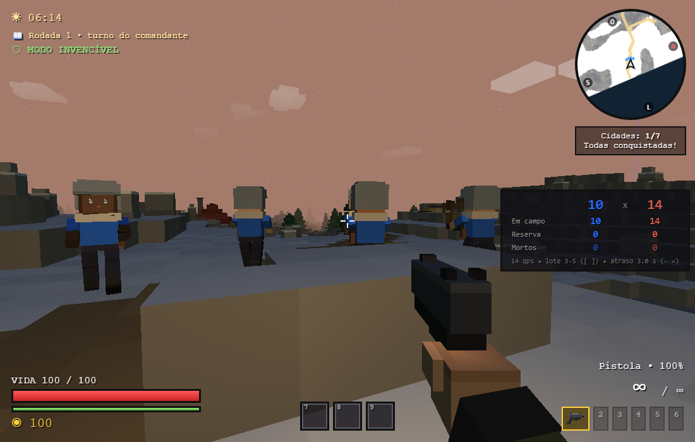
Encontro no campo (Choque)
10 soldados seus contra um bando de 14 num tile vizinho à capital. Botão Lutar no mapa mundi.
?mundo=1&auto=1&mute=1&seed=11&enc=campo&soldados=10&inim=14&mix=1
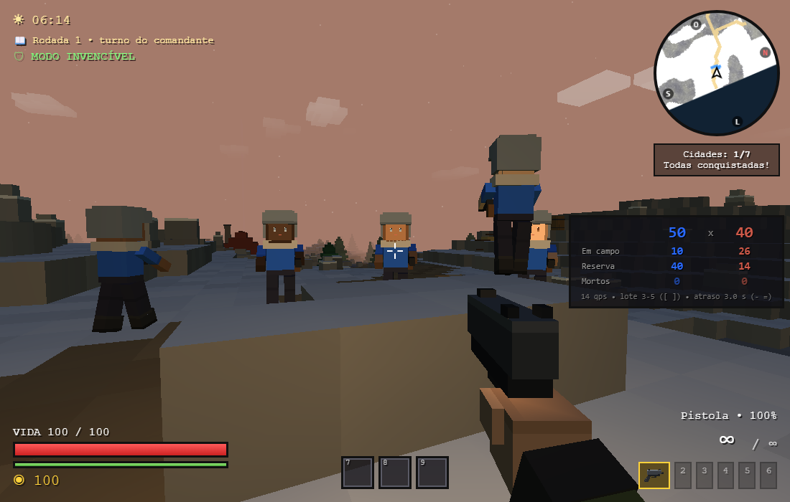
Encontro no campo, 30 x 10
50 soldados contra 40 (campo: no máximo 30 inimigos e 10 soldados vivos ao mesmo tempo; o resto vem como reserva).
?mundo=1&auto=1&mute=1&seed=11&enc=campo&soldados=50&inim=40&mix=1
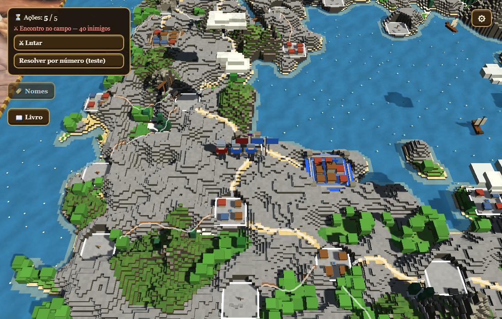
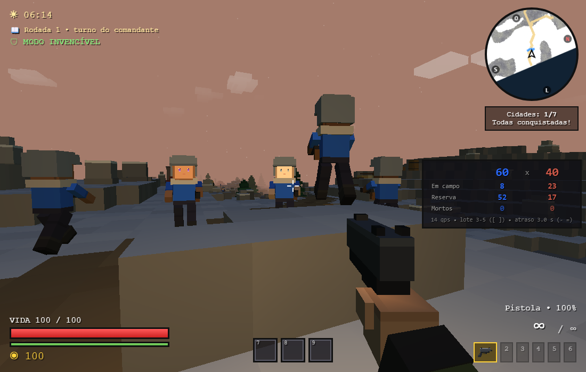
Dois batalhões no mesmo tile
Dois batalhões de 30 somam 60 contra 40; as baixas se dividem igualmente entre eles ao vencer.
?mundo=1&auto=1&mute=1&seed=11&enc=campo&soldados=30&soldados2=30&inim=40&mix=1
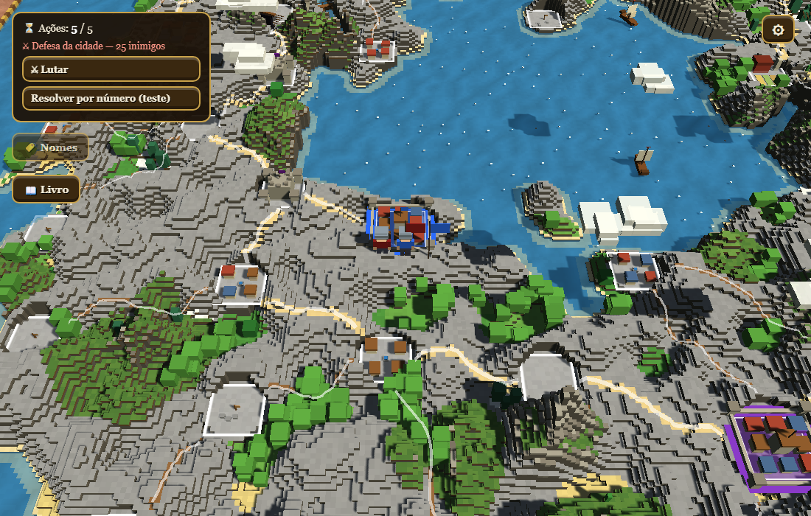
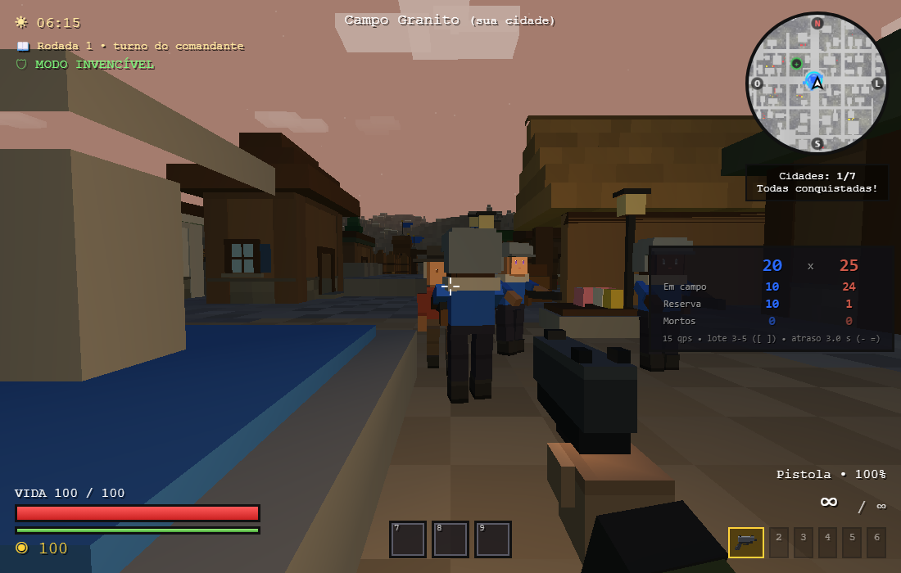
Defesa da cidade
Um bando de 25 cai sobre a capital com o seu batalhão dentro. Sem fuga: sair do raio azul é perder.
?mundo=1&auto=1&mute=1&seed=11&enc=defesa&soldados=20&inim=25&mix=1
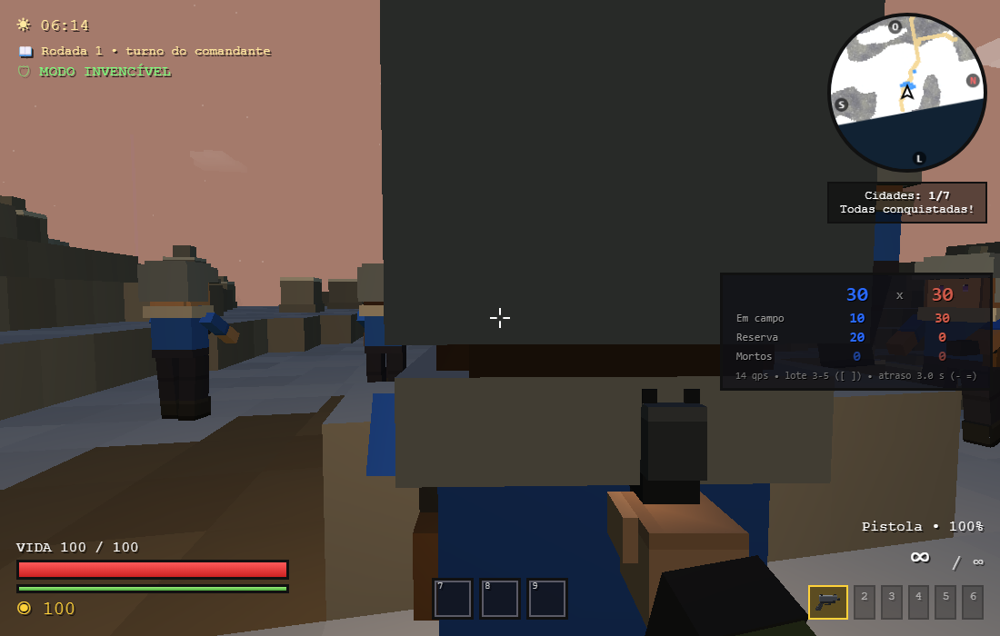
Invasão (Ataque)
Um bando estacionado no tile vizinho; conquiste o ponto principal (a guarnição vem da batalha; vencer conquista o POI). Não se sai do tile em combate.
?mundo=1&auto=1&mute=1&seed=11&enc=invasao&soldados=30&inim=30&mix=1
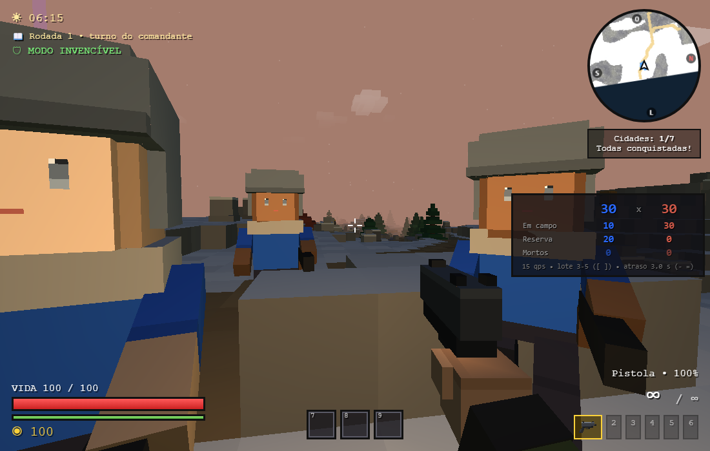
Invasão com POI seu perto
Como a invasão, mas um POI do tile já é seu: os soldados de reposição nascem nele. Vencer passa todos os POIs inimigos do tile para você.
?mundo=1&auto=1&mute=1&seed=11&enc=invasao&soldados=30&inim=30&mix=1&meu=1
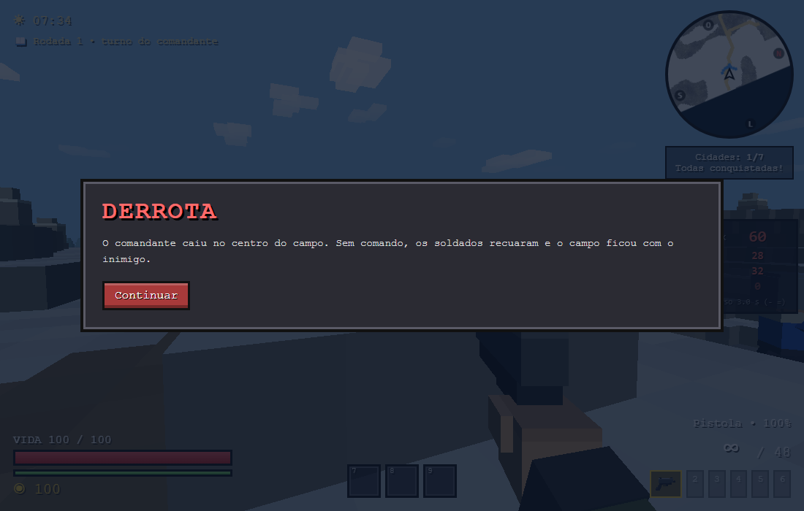
Morte em batalha grande (batalhão se desfaz)
Bando forte e comandante mortal: ele cai 40 s depois de começar a luta, e o batalhão se desfaz.
?mundo=1&auto=1&mute=1&seed=11&enc=campo&soldados=10&inim=60&mortal=1&morrer=40
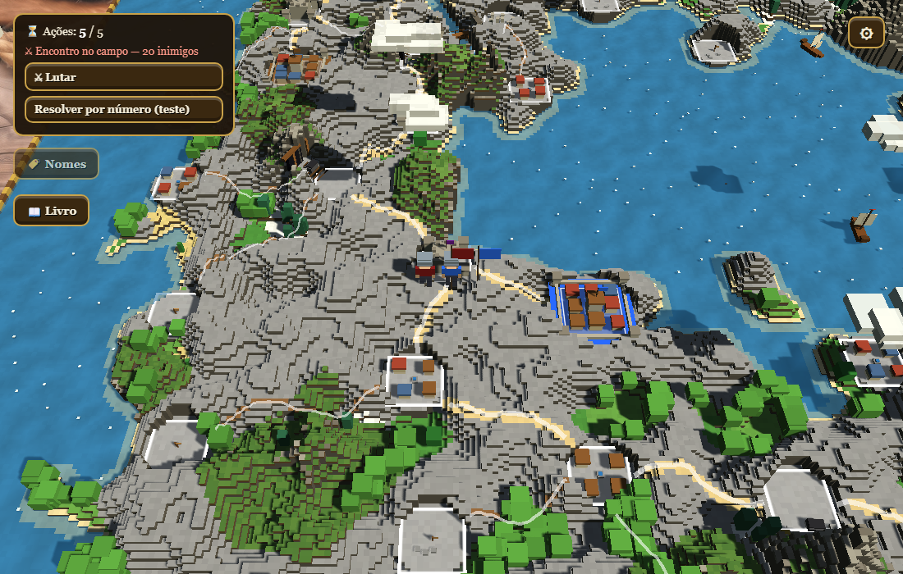
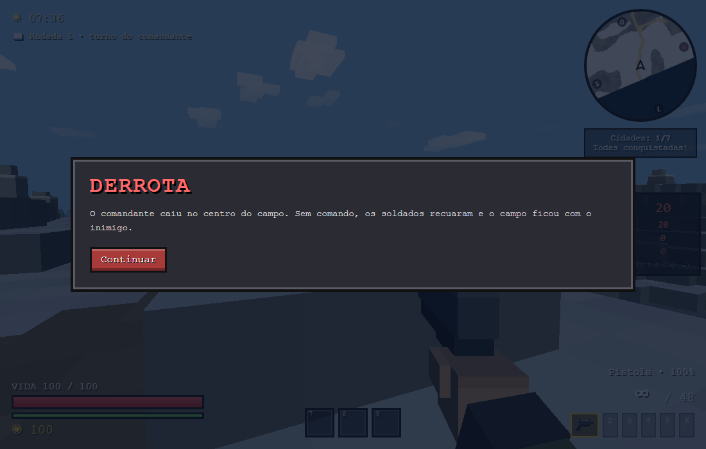
Morte com o batalhão vazio
Comandante sem soldados contra um bando: cai e o batalhão (só ele) se desfaz.
?mundo=1&auto=1&mute=1&seed=11&enc=campo&soldados=0&inim=20&mortal=1&morrer=40
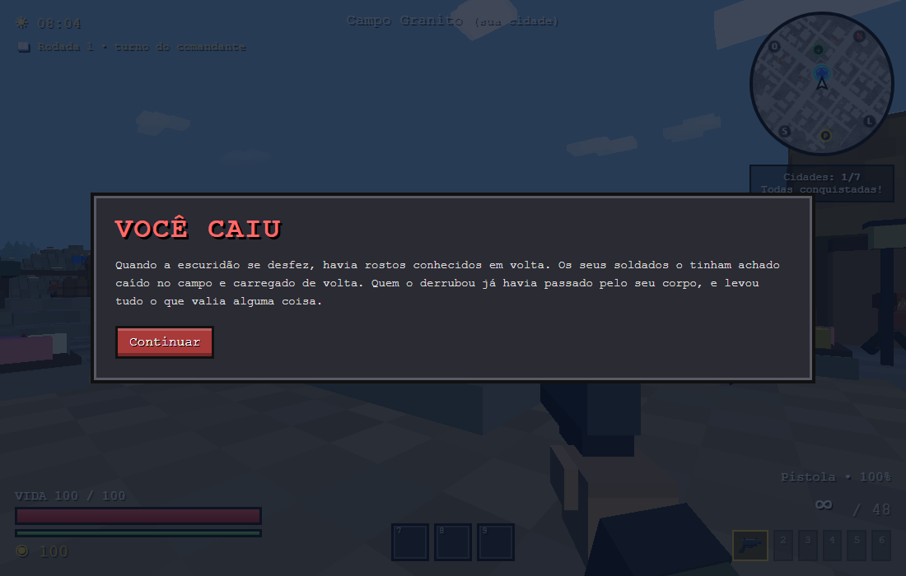
Morte fora de batalha (tile explorado)
O comandante já está dentro do tile, sem encontro, e cai 20 s depois: perde ouro, parte da munição e dos itens, (a ação da exploração já foi gasta; nenhuma a mais).
?mundo=1&auto=1&mute=1&seed=11&explorar=1&soldados=10&mortal=1&morrer=20
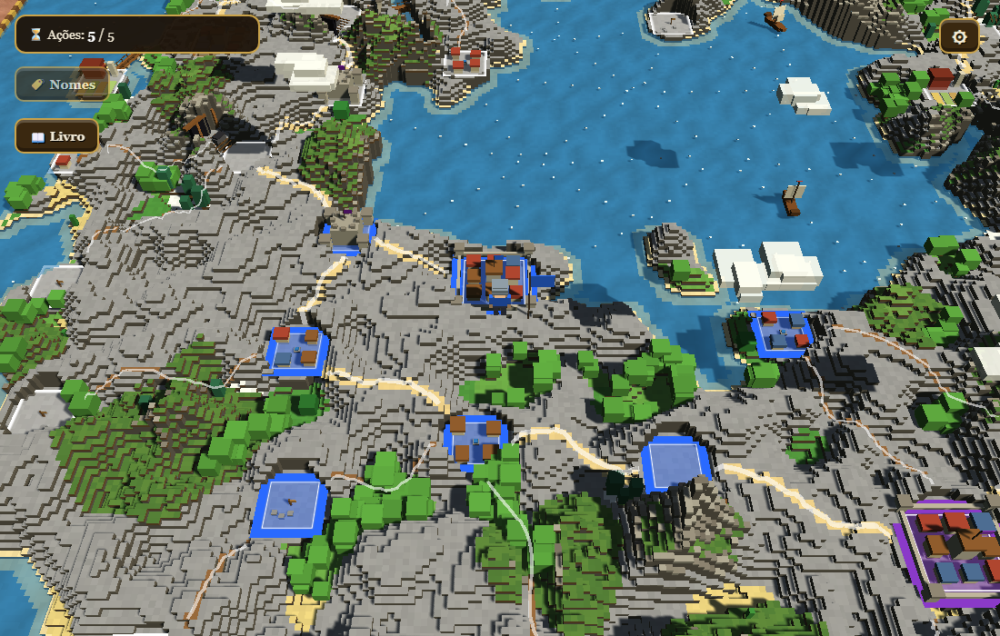
Renda dos tiles e armazém
Seis tiles seus ao redor da capital. Encerre o turno: a tabela de renda aparece no livro (Resumo) e os recursos entram no armazém (livro > Cidades).
?mundo=1&auto=1&mute=1&seed=11&terras=6&armazem=1&nivel=3
Vila distante fica independente
Uma vila sua sem nenhum tile seu por perto, com a independência garantida: ao encerrar o turno ela se declara independente e o mapa mundi perde a bandeira.
?mundo=1&auto=1&mute=1&seed=11&vila=1&indep=1&nivel=3
Armazém cheio (excedente se perde)
Os 24 slots do armazém já estão cheios: a renda dos tiles não cabe e some em silêncio (a tabela mostra o que rendeu).
?mundo=1&auto=1&mute=1&seed=11&terras=6&armazem=cheio&nivel=3
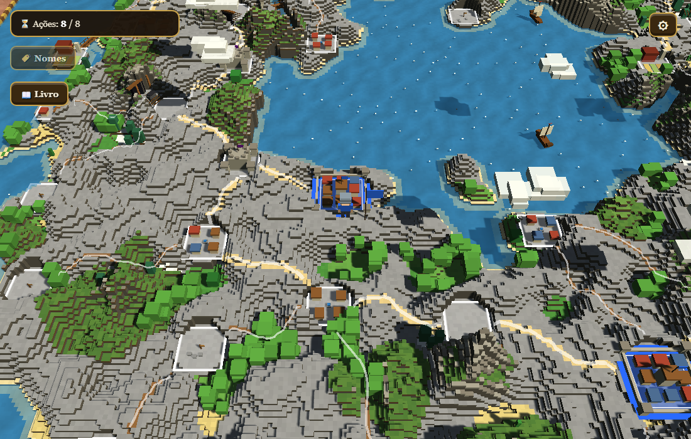
Entrar numa segunda cidade sua
A cidade NPC mais perto já é sua, com o armazém abastecido: ao entrar, os suprimentos dela saem do armazém único. Botão direito no tile > Entrar.
?mundo=1&auto=1&mute=1&seed=11&cidade=1&armazem=1&nivel=5
Ponte neutra (pedágio 100)
O batalhão está ao lado de um tile de ponte sem dono. Marche para o outro lado: o aviso pede ◉100 (pagar, recusar, não mostrar de novo).
?mundo=1&auto=1&mute=1&seed=11&sitio=ponte&ped=neutro&ouro=1000
Ponte de facção aliada (de graça)
Ponte de uma facção Aliada: cobra 150 x 0 = nada. Troque rel= (fav 105, neutral 150, unfav 225, enemy 300) na URL para ver os outros preços.
?mundo=1&auto=1&mute=1&seed=11&sitio=ponte&ped=faccao&rel=ally&ouro=1000
Ponte de facção inimiga (300)
Pedágio de 150 x 2. Recuse e volte (não paga), ou pague e atravesse; o ouro pode ficar negativo (dívida).
?mundo=1&auto=1&mute=1&seed=11&sitio=ponte&ped=faccao&rel=enemy&ouro=100
Ponte sua (grátis)
Atravessar o seu próprio tile não cobra nada. (NPCs que passarem pagam a você; eles só andam de verdade na 8.10.)
?mundo=1&auto=1&mute=1&seed=11&sitio=ponte&ped=meu&ouro=1000
Ponte tomada por bandidos (500)
Bandidos seguram a ponte: o encontro oferece lutar ou pagar ◉500 e passar.
?mundo=1&auto=1&mute=1&seed=11&sitio=ponte&ped=bandido&bando=1&ouro=1000
Fortaleza neutra (pedágio 100)
Mesmo pedágio, no tile de fortaleza. Encerre ações várias vezes: bandidos soltos podem tomar a passagem (diário do turno).
?mundo=1&auto=1&mute=1&seed=11&sitio=fortaleza&ped=neutro&ouro=1000
Torre de vigia nova
Dentro do tile, ao lado de uma torre sua. [E] na base ou no binóculo: 3 usos por rodada, 50% de falha; a dungeon achada aparece como cristal roxo no mapa mundi (J) só nesta rodada.
?mundo=1&auto=1&mute=1&seed=11&poi=tower&dono=player
Baú de recompensa (fazenda de bandidos)
Fazenda com guarnição de bandidos e o baú trancado. Limpe os bandidos: o POI vira seu na hora e o baú abre (comida).
?mundo=1&auto=1&mute=1&seed=11&poi=farm&dono=bandit
Baú de recompensa (torre de bandidos)
Torre dominada por bandidos; o baú guarda munição. Se os bandidos a retomarem, o baú enche de novo.
?mundo=1&auto=1&mute=1&seed=11&poi=tower&dono=bandit
Santuário: dízimo no altar
Santuário seu e vida pela metade: [E] no altar cura uma parte pelo dízimo (sem buffs nem debuffs no preço).
?mundo=1&auto=1&mute=1&seed=11&poi=sanctuary&dono=player&vida=40
Entreposto: Comprar / Vender
Entreposto seu: o menu pergunta Comprar ou Vender; ele só paga até o ouro que tem na rodada.
?mundo=1&auto=1&mute=1&seed=11&poi=post&dono=player&ouro=1000
Taverna: Comprar / Vender e cura
Taverna sua: menu com Comprar (comida e remédios), Vender itens e o quarto.
?mundo=1&auto=1&mute=1&seed=11&poi=tavern&dono=player&ouro=1000